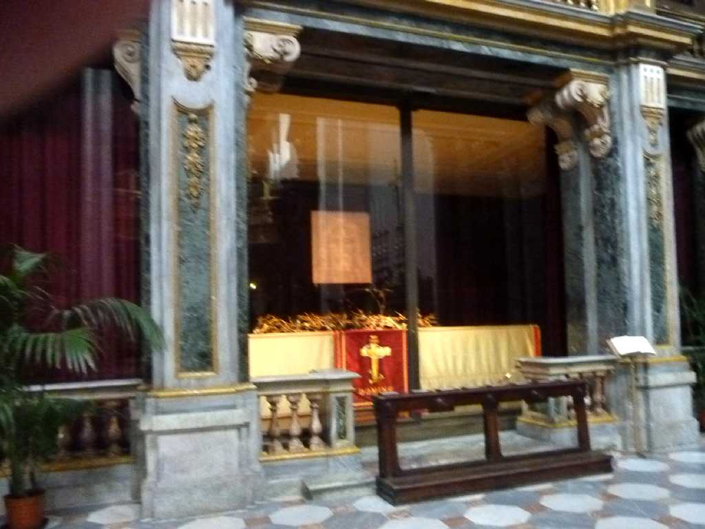
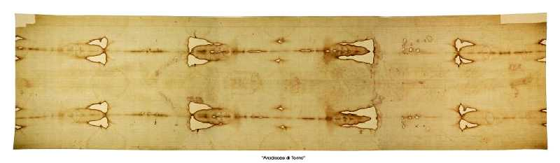
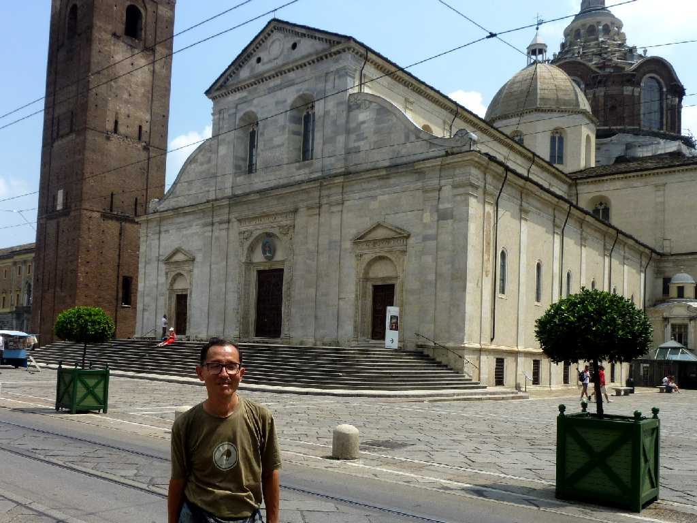

The Holy Shroud Duomo di Torino
トリノの聖骸布 縦4.36m横1.1mの杉綾織の亜麻布 布上に残されたキリストの全身像の痕跡より頭を中心に縦に二つ折りにして遺骸を包んだと見られ頭部には血痕が残っている

The Holy Shroud
トリノの聖骸布は放射性炭素年代測定が行われ布自体の織布期は１２６０年から１３９０年の間の中世であると推定されたが同様の方法を用いた別の調査結果では死海文書の年代すなわち紀元後 １世紀頃という年代が出されたこともある

July 9 2011 Duomo di Torino